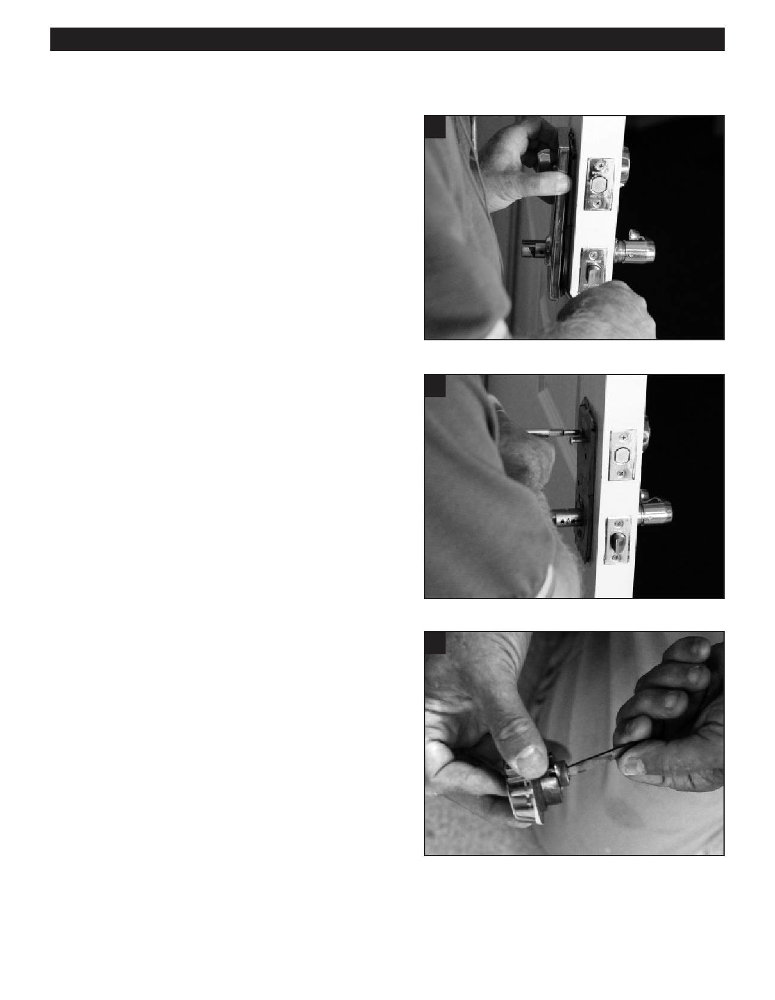

PA RT I C I PA N T R E S O U R C E G U I D E
Changing a Door Lock (continued)
Each property will have their own Policy to
2
ensure that as residents move out, they no
longer have access to the empty apartment.
Let’s discuss some common related topics.
1) Vacant Lock
a. A Vacant Lock is one of a group of locks that are all keyed
alike. These are used while the apartment is empty so that
it has the same key as the other empty apartments.
b. The benefits of these locks are that all employees can
access to vacant units with the use of one key.
c. This key can be used to have employees and contractors
perform work in the units. Additionally, office employees
can show vacant-ready units to prospects with the same
3
key, making it very fast and efficient.
d. When a vacant-ready unit is leased, the locks are changed
from the Vacant Lock to a new lock (to that apartment) just
before the new resident move in, ensuring that the new key
has not been in the hands of anyone other than the new
resident and the company’s employee.
2) Key Security
a. Keys should be kept in a locked cabinet inside a locked
room or closet and should never be marked with the
apartment number.
b. There should be a process of checking keys out to
employees and vendors to keep track of them. This policy
may include the requirement that a vendor or contractor
leave a form of ID or collateral to ensure the return of the
5
key before they leave the property.
c. Follow Property/Company policy to ensure that all keys are
able to be located at all times.
3) Ensure no Duplicates
a. Keep track of the cut depths of the keys to record and
ensure that duplicates are not used anywhere on the
property.
b. Keep track of what lock is placed where to ensure that the
same keys never work on the same apartment again. (the
locks are not changed back to that apartment)
c. This log sheet should be stored in a secure location.
25